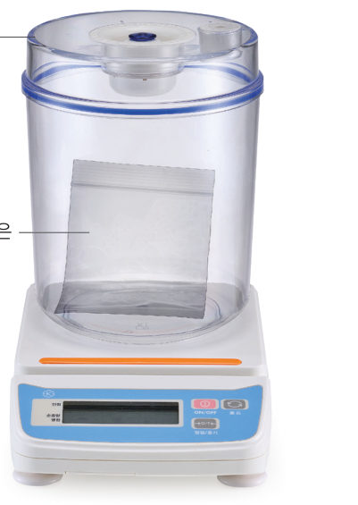
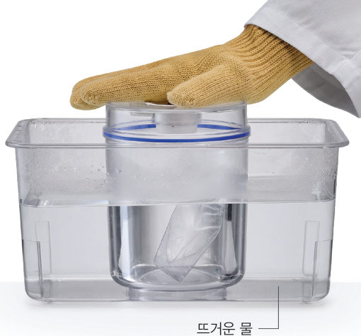
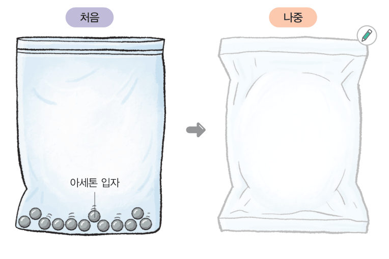
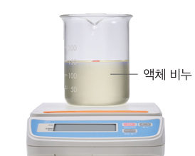
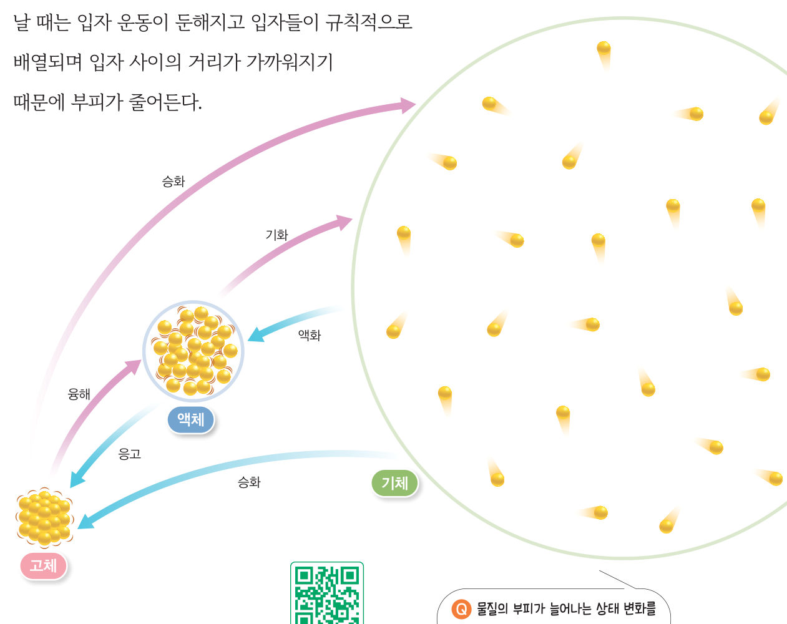
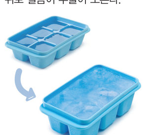

살아있는 교과서 · Ⅳ. 물질의 상태 변화 · 2. 물질의 상태와 상태 변화 · 03 130~134쪽
상태 변화와 입자 배열의 변화
“처음에 부은 것보다 작아졌어.” 녹인 초콜릿을 틀에 부어 굳혔더니 크기가 작아졌다. 물질의 상태가 변할 때 질량과 부피는 어떻게 될까? 3D 감압 장치로 아세톤의 상태 변화를 측정해 보자.
🎯 이 단원을 배우면 — 물질의 상태가 변할 때 부피는 변하고 물질의 성질과 질량은 변하지 않는 까닭을 입자 모형으로 설명할 수 있다.
탐구물질의 상태 변화 시 질량과 부피 변화 측정하기 130~131쪽
물질의 상태가 변할 때 질량과 부피는 어떻게 될까?
녹인 초콜릿을 틀에 부어 굳혔을 때 초콜릿의 크기가 작아진 것을 볼 수 있다. 이것은 물질의 상태가 변하면서 부피가 변한 현상이다. 물질이 가지고 있는 고유한 양을 질량이라고 한다.

130쪽감압 장치와 아세톤을 넣은 비닐 주머니

131쪽뜨거운 물이 담긴 수조에 감압 장치를 넣는다.
비닐 주머니에 아세톤을 1 mL 정도 넣고 공기를 최대한 뺀 뒤 입구를 막는다.
비닐 주머니를 감압 장치에 넣고 장치 속 공기를 뺀다. (질량을 정확하게 측정하기 위해 공기의 영향을 줄인다.)
측정 감압 장치를 전자저울 위에 올려놓고 질량을 측정하여 표에 기록한다.
관찰 뜨거운 물이 담긴 수조에 감압 장치를 넣고 변화를 관찰한다.
측정 아세톤의 상태가 모두 변하면 감압 장치 표면에 묻은 물기를 잘 닦은 뒤 질량을 측정하여 표에 기록한다.
⚠️ 환기가 되도록 하고 아세톤을 흡입하지 않도록 주의한다. 마스크를 착용하고 아세톤이 눈이나 피부에 닿지 않게 한다. 뜨거운 물을 사용할 때 화상을 입지 않도록 주의한다.
3D 가상 실험가상 감압 장치와 전자저울
순서대로 버튼을 눌러 보자. ① 저울에 올려 질량 재기 → ② 뜨거운 물 수조에 넣기 → ③ 꺼내서 질량 재기. 이때 물기를 닦았는지에 따라 저울 숫자가 어떻게 달라지는지도 확인하자. 드래그하면 장치가 돌아가요.
준비
전자저울-.-- g
아세톤의 상태액체
구분
처음
나중
감압 장치의 질량(g)
-
-
① 버튼부터 눌러 보세요.
정리해 볼까
1과정 4에서 아세톤은 변하고, 비닐 주머니는 .
2아세톤의 상태가 변할 때 질량은 , 부피는 .
3감압 장치 표면의 물기를 닦지 않고 재면 나중 질량이 처음보다 측정된다.
4모형 이용 아세톤 입자의 배열이 어떻게 변하는지 그림에 나타내고, 질량과 부피의 변화를 입자 배열과 관련하여 설명해 보자.

131쪽처음(액체 아세톤) → 나중(?)
다르게 해 보기비누의 상태 변화에 따른 질량과 부피 변화 측정하기 131쪽

① 고체 비누 조각을 비커에 넣고 가열해 녹인다. ② 녹은 비누의 높이를 표시하고 질량을 측정한다. ③ 비누가 굳은 뒤 높이를 표시하고 질량을 측정한다.
정리 비누가 굳은 뒤 높이는 , 질량은 .
교과서물질의 상태가 변할 때 입자 배열은 어떻게 변할까? 132쪽
물질의 상태가 변할 때 물질을 구성하는 입자의 종류와 수가 변하지 않기 때문에 물질의 성질과 질량은 변하지 않는다. 반면 물질의 상태가 변할 때 입자 배열이 달라지기 때문에 물질의 부피는 변한다.
일반적으로 융해, 기화, 고체에서 기체로의 승화가 일어날 때는 그림 4-7과 같이 입자 운동이 활발해지고 입자들이 불규칙하게 배열되며 입자 사이의 거리가 멀어지기 때문에 부피가 늘어난다. 이와 반대로 응고, 액화, 기체에서 고체로의 승화가 일어날 때는 입자 운동이 둔해지고 입자들이 규칙적으로 배열되며 입자 사이의 거리가 가까워지기 때문에 부피가 줄어든다.

그림 4-7물질의 상태 변화와 입자 배열의 변화
3D 움직이는 그림 4-7같은 입자, 다른 부피
막대를 움직여 상태를 바꿔 보자. 입자 수와 질량, 부피가 각각 어떻게 되는지 오른쪽 표를 보자. 물(얼음)을 고르면 예외도 확인할 수 있어요.
고체

오개념 바로잡기 · 물질이 응고할 때 항상 부피가 줄어들까? 물이 응고해 얼음이 될 때는 예외적으로 입자 사이의 거리가 멀어지기 때문에 부피가 늘어난다. 그래서 얼음 틀에 물을 가득 담아 냉동실에서 얼리면 얼음 틀 위로 얼음이 부풀어 오른다.
1물질의 부피가 늘어나는 상태 변화를 모두 골라 보자. (일반적인 물질)
과학이 톡영양은 그대로, 보관은 편리하게 — 동결 건조 식품 133쪽
133쪽라면의 건더기 스프
음식을 오래 보관하기 위해 열을 가해 건조하면 영양소가 파괴되거나 향이 날아가 맛이 없어지는 단점이 있다. 이러한 단점을 보완하기 위해 동결 건조를 이용한다.
동결 건조는 온도를 급격하게 낮춰 식품을 얼린 다음, 압력을 낮춰 식품에 포함된 얼음을 승화시켜 식품을 건조하는 방법이다. 동결 건조는 식품의 영양소가 파괴되지 않기 때문에 라면의 건더기 스프, 인스턴트커피 가루 등을 만드는 데 이용한다.
최근에는 센서와 제어 알고리즘으로 건조 과정을 최적화해 효율성을 높이고 제품 품질을 향상시키는 스마트 동결 건조 시스템이 개발되어 활용되고 있다.
1동결 건조에서 식품 속 얼음은 하여 빠져나간다.
2🧑🤝🧑 창의성 쑥! 식품 보존과 관련된 진로 체험 활동 계획서를 작성해 보자. (체험 일시, 장소, 준비물, 체험하고 싶은 내용)
스스로 확인하기130쪽 학습 목표를 달성했는지 확인해 보자 132쪽
1개념 확인 물질의 상태가 변할 때 물질의 성질은 ( ) 질량은 ( ) 부피는 ( ).
2사고력 고무풍선에 드라이아이스 조각을 넣고 입구를 막으면 고무풍선이 점점 부풀어 오른다. 이러한 현상이 일어나는 까닭을 입자 배열의 변화로 설명해 보자.
5분 테스트상태 변화와 입자 배열의 변화
1물질의 상태가 변하면 물질의 질량은 변하지 않고, 는 변한다. 상태 변화가 일어날 때 변하는 것은 O, 변하지 않는 것은 X — 입자의 종류 입자의 배열 입자의 크기 입자의 개수
2입자 사이의 거리가 가까워지면서 부피가 줄어드는 상태 변화는 , , 기체에서 고체로의 승화이다. 입자 사이의 거리가 멀어지면서 부피가 늘어나는 상태 변화는 , , 고체에서 기체로의 승화이다.
3옳은 것은 O, 옳지 않은 것은 X를 골라 보자.
⑧ 아세톤이 기화할 때 아세톤 입자의 운동이 둔해지고 입자들이 규칙적으로 배열된다.
⑨ 드라이아이스의 크기가 시간이 지나면서 점점 작아질 때 드라이아이스 입자 사이의 거리는 멀어진다.
⑩ 물질이 응고할 때 부피는 항상 줄어든다.
스스로 정리하기상태 변화와 입자 배열 · 두 번째 블록 찾기 134쪽
3상태 변화와 입자 배열의 변화
(1) 물질의 상태가 변할 때 물질의 성질과 질량은 변하지 않고 은/는 변한다. (2) 물질의 상태가 변할 때 물질을 구성하는 입자의 종류와 수는 변하지 않지만, 입자 은/는 달라진다.
🧩 두 번째 블록 찾기
젖은 흙이 마를 때는 어떤 상태 변화가 일어날까?
힌트 조각 — 125쪽: 물질의 세 가지 상태 중 물은 액체이다. / 129쪽: 젖은 흙이 마를 때 액체인 물은 기체인 수증기가 된다. / 132쪽: 물 입자의 운동이 활발해지고 입자들이 불규칙하게 배열되며 입자 사이의 거리가 멀어진다.
제출학생 정보 · 제출하기
모든 활동을 마친 뒤 제출하면 전체가 한 번에 채점되고 피드백이 나타나요. 답안은 선생님 스프레드시트(중1 탭)에 기록돼요.